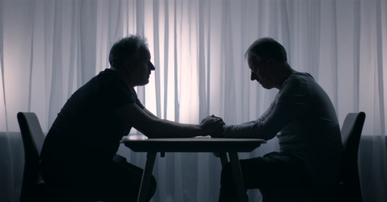
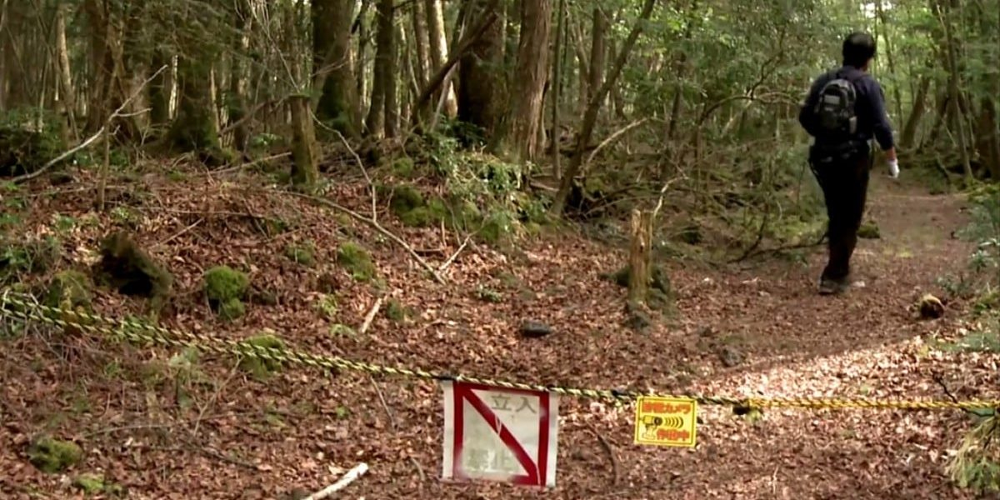
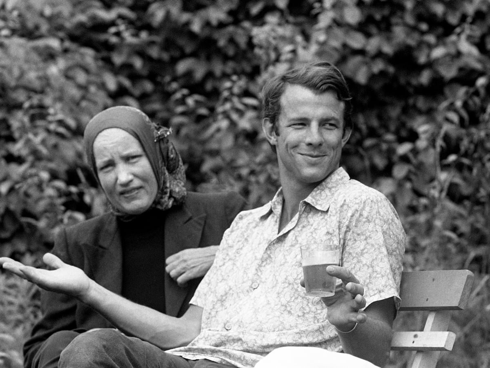

By: TerrorFlix
Vida Após a Morte explora uma dúvida que todos temos: "Para onde vamos após falecer?". Ao longo de seis episódios, a produção mostra relatos de pessoas que tiveram experiências de quase morte, ressurreição ou se depararam com espíritos assustadores. Especialistas no assunto também compartilham os seus conhecimentos sobre dimensões espirituais na obra.
Tell Me Who I Am acompanha Alex Lewis, que perdeu toda a sua memória em um acidente de carro. Depois de ficar em coma por meses, o rapaz acorda, e se lembra apenas do irmão Marcus, que o ajuda a compreender melhor o próprio passado. O problema é que o irmão mente, e oculta os fatos aterrorizantes que destruíram a vida de Alex antes do acidente.
Apesar de ser curto, o documentário Suicide Forest nos dá uma perturbadora dimensão sobre as tragédias que ocorrem na Floresta Aokigahara. Localizada no Japão, o local já foi palco de milhares de suicídios. Só em 2003, foram 1008 vidas perdidas. Alguns dizem que a floresta é habitada por espíritos maléficos, e outros, explicam que estar isolado em uma floresta pode potencializar sentimentos negativos em quem já está mal. Independente do que você pense, a produção é de gelar a espinha. Aviso: Algumas imagens são fortes, e podem não estar censuradas
Grey Gardens é um dos documentários mais famosos da lista, e não é para menos. Imagine que alguns parentes de Jackie Kennedy estivessem morando em uma mansão abandonada, com vermes e ratos espalhados pelo local. Isso aconteceu de verdade, e a produção registra a rotina desconcertante de mãe e filha vivendo uma realidade absurda